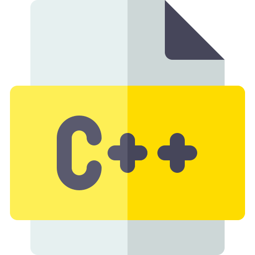

About Me
I'm a third-year student at the University of Calgary, studying Software Engineering (B.Sc). From a young age, I have had a passion for technology and my naturally curious mind fuelled my interests. I am a team player with a positive attitude, and enjoy using my critical thinking skills to solve problems. I enjoy doing both front-end and back-end development, and I am proficient in Java, Python, C, C++, HTML, CSS, JavaScript and various libraries/frameworks. My goal as a student and developer is to leverage technology to create a lasting impact on users.


